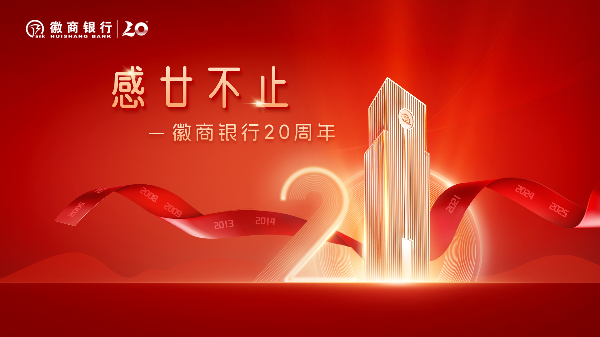

Overview
Fortune and good luck far and wide
Huishang Bank approached this milestone wanting more than a commemorative logo. They needed a full campaign that could speak to both longtime clients and a younger generation of banking customers.
Chinese New Years was drawing near, and the company wanted to join in on the festivites by having a New Year's fortune themed campaign in the city's busiest subway stations.
Process
From brief to launch.
Research & Brand Immersion
Huishang Bank's 20th Anniversary key visual is formal but festive. The main colors used were red and gold, two colors that symbolize Chinese fortune. However, for this campaign, they wanted something that could appeal to the youth.
And so, it was my job to create a new key visual that had elements from the original 20th anniversary

Concept Development
Developed three campaign directions — one rooted in archival photography, one in abstract growth patterns, and one in illustrated portraiture. The client selected the growth pattern direction, which I then expanded into a full system.
Visual System Design
Built out a modular visual language using layered concentric forms representing 20 years of milestones. Designed key art, typography hierarchy, and a colour palette extending from the bank's existing gold and navy.

Rollout & Adaptation
Adapted the system across print collateral, social media templates, branch environmental graphics, and a commemorative booklet. Delivered production-ready files with an adaptation guide for the internal team.

Final Product
The campaign, in full.
The final system deployed across all touchpoints — branch environmental graphics, commemorative print collateral, and digital channels — unified by a single visual language built to last beyond the anniversary period.


Outcomes
A campaign that landed.
The campaign ran across Huishang Bank's branch network and digital channels throughout the anniversary period, receiving positive internal reception and client feedback citing the visual coherence as a standout quality.
4
Media formats adapted
20+
Individual assets delivered
8wk
Concept to delivery
1
Unified visual system